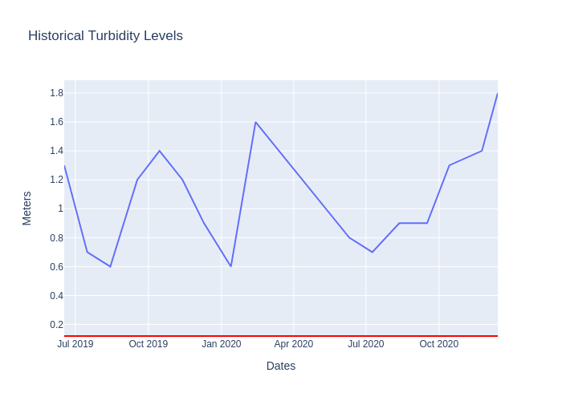

Turbidity
Turbidity is the cloudiness of a fluid. In environmental terms, turbidity levels are used to determine the amount of sunlight that can be seen. Turbitidy tests are taken by using secchi disks which are lowered into the Severn River. If the secchi disk cannot be easily seen in less than 0.5 meters, it can show possible signs of sediment or eutrophication in the water. Sunlight is important to the aquatic ecosystems as many organisms rely on aquatic plants. If plants cannot receive the needed sunlight, they cannot grow and therefore cannot provide food and shelter to other aquatic organisms. Sediment suspended in the water blocks sunlight to underwater grasses. These grasses help filter water and oxygenate the water so they are necessary to aquatic ecosystems.
HISTORICAL
TRENDS

BASELINES/MAX LEVELS
Minimum level: 0.12 m (12 cm)
DESCRIPTION OF BASELINES: This baseline is retrieved from the Severn River Association. The minimum level represents the minimum level of sunlight that can be seen through the water. The minimum level of turbidity listed is .12m. See the link below for more information about turbidity levels.
Source (Severn River Association):
https://severnriver.org/programs/water-quality-monitoring/LOCATION OF DATA COLLECTION:
COORDINATES: (39.00764, -76.50350)
DEPTH: 0.5 meters